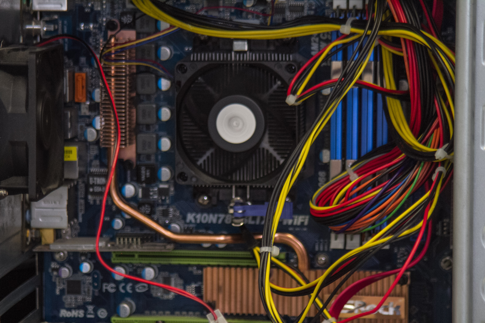

Questo sito è stato creato per un nostro progetto di classe nel quale ci è stato richiesto di:
in un computer.Il compito è molto semplice ma richiede molta attenzione perevitare di danneggiare i componenti, a lato si possono trovare tutte le fasi del progetto.
Per completare l'esperienza ci sono state fornite 6 ore, dei vecchi pc con molti componenti differenti e dei ricambi nel caso non funzionassero.
Le caratteristiche del nostro computer erano: 